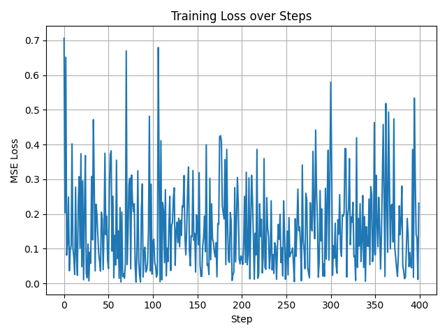
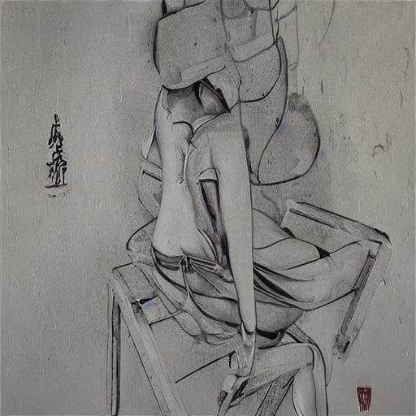
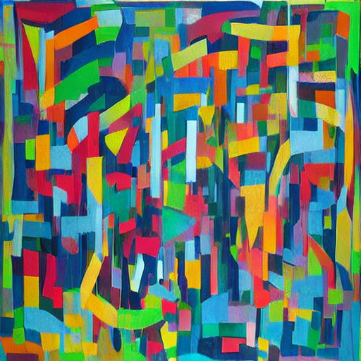

Demographic2Art
A Diffusion Model to Understand How Artist Demographics Influence Artistic Production
![]()
May 28, 2025
Roadmap to Research
Research Question: How do artist demographics and experiences influence artistic production?
Sociology of Art (Bourdieu 2010; Becker 1982) long pointed our how social background would influence personal artistic productions.
Digital humanity (Risam 2015) started to discuss how intersectionality would relate to artistic production.
Increasing number of large art archive (WikiArt n.d.) as well as development in computer vision, especially diffusion models (Ho, Jain, and Abbeel 2020) make the systematic and holistic examination become possible.
Yet, computing bottlenecks exist along with the developments.
Large-Scale Pipeline: Bottlenecks & Overcomes
Major Bottlenecks: Data Requests & Model Training/Calling Cost
*Step 0: Prior Data Collection
“WikiArt already features some 250.000 artworks by 3.000 artists”


For the artist and artwork basic datasets, I scraped them by selenium, which could be hard to parallelize. For details, see my other repository here.
Step 1: Data Collection
Step 1: Data Collection
Image URLs → Images (
ec2_scraping.ipynb)- use 8 EC2 instances to request different batches of URLs, then save images onto S3 bucket
Wikipedia URLs → Contents → Demographics (
ec2_gpt.ipynb)- use 8 EC2 instances to request different batches of URLs and call GPT API to extract demographic information of artists, then save json files onto S3 bucket
*After all, download S3 bucket to Midway3 project folder
Step 2: Model Training
Step 2: Model Training (con’d)
Low-Rank Adaptation (LoRA) fine-tuning on Stable Diffusion V1.5 by decription-image pairs, through train_lora_desc2art.py and train_lora_desc2art.sbatch.
Grid Search upon 6 (2*3) hyperparameter conditions, by
train_lora_desc2art.sh:Learning Rates (1e-5, 1e-4, 1e-3): the
lrhyperparameter controls the step size of each gradient update.Seeds (42, 43): the
seedhyperparameter simply change the random seed of the training, which proved to be crucial (Picard 2023).
Other hyperparameter settings: rank = 4; max_train_step = 20,000; batch_size = 2; grad_accum = 4.
Step 2: Model Training (con’d)
Best Model: learning rate of 1e-03 and seed of 42

Step 3: Webiste Deployment
Website is deployed to call Demographic2Art models on the GPU node, by app.py and app.sbatch, and it could be ssh to the local machine.
Step 3: Webiste Deployment (con’d)
Step 3: Webiste Deployment (con’d)


*Alternative Pipeline for Personal AWS Account
For a personal AWS account, we can collect data, train model, and deploy website all on cloud, by using the GPU resources it provide.
This would include following changes:
Step 1 would not need to download data from S3 to Midway3.
Step 2 could just launch different EC2 instances to run grid search, as well as use the Weights & Biases API to record the training process. Please see sweep_* files in the repository.
Step 3 could deploy a public website directly, instead of to ssh.
Future Works
Make the website public or set it as API for painting generation
Comparing between different artist demographic settings
- Quantitatively: use interpretable machine learning techniques to examine the parts affected by certain attributes.
- Qualitatively: manually analyze the painting differences set to different demographic attributes
Generate counterfactual paintings to check the social determinants of paintings, for example, Vincent van Gogh born in the United States